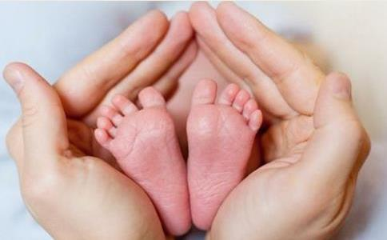

我出生在1969年2月，从小没有接触过
我现在是两个女儿的妈妈，我结过两次婚，两个女儿分别是两次
和第一任丈夫认识后，自己还没到晚婚晚育的年龄，就同居了，这是邪淫！第一、二次坠胎是在1991年，是三个月里连续两次坠胎，当时的我对两性生殖知识极为贫乏，怎么避孕怎么排卵都不知道，避孕方法全是爱人提供，一旦避孕失败，胎儿必须流产，因为避孕的药物不能让胎儿正常发育。刚巧他的妈妈是妇科的护士，她认为女人流产十次八次都没有关系。单位里也把人工流产当作计划生育外的补救措施，动不动就把意外怀孕的孩子打掉了。身边的一些女性也有这样的经历，比如有的同事特意在生完一个孩子后小产一次，认为这样对身体更好，就这样稀里糊涂地做下了恶毒的事情，但是自己还觉得很正常，根本不会想到那些胎儿被搅碎吸走的悲惨
1993年，我成功调动到中国另一个沿海大城市，新单位的领导规定初调动来的人员都不准在第一年怀孕，可是我就在那一年里7月和9月一连两次怀孕，为了工作和遵守单位的规则，只好做了流产，流产后两三天就去上班了。当时根本不懂得佛法，也不懂得坠胎对婴儿的极大伤害，没有
1997年， 我生下一个
再次结婚后，丈夫也是一位多年吃素的佛教徒，但对流产还是没有什么正确的认识。而我自己也没有真心地去了解佛法，仅仅烧个香什么的，并没有真正地认识到
41岁时，我顺产生下健康的女儿，心中的愿望实现了，非常开心，就计划不再生孩子了， 但是没想到，2011年7月份，在小女儿快10个月大的时候，又意外怀孕了，当时爱人和我都吓坏了，我们只想生一个孩子就好的，怎么又怀孕了呢？他害怕多一个孩子负担太重，很焦虑，建议不要孩子，我就打电话给我妈，结果她也认为要那么多孩子干什么（这是她一辈子的想法，认为孩子都是来拖累父母的），让我打掉孩子，我对她的话从来就是言听计从，相当信任，认为她老人家的话绝对正确，其实我当时的内心很纠结，很想把这个孩子留下来的，可没有人支持我，我自己也非常害怕，因为我刚刚谈好一个学校的工作，8月份要上班，怎么向领导交代我又怀孕的事情呢？而且我那时的工作收入对于我们这个
在去流产的那天，我清楚地记得反对流产的一些善良人士就在流产医院的大门外用图片展示流产的残忍和非人道的残杀行为，那些恐怖的坠胎照片，也没能吓醒我和丈夫，我当时放慢了脚步，想听听人家怎么说的，但是我爱人对他们非常反感，拉着我快步走进去，就在我快要进入医院门内时，其中一位反对坠胎的男士对着我大喊：“女士，女士，千万不要走进那扇门，你会永远带着这个恶行走到你人生的终点的！”可是，那么激烈的呐喊，那么真情的挽回，告诉我杀生真相的善良之声，都没能唤醒我这颗冷酷、残忍、极度自私的心！在和医护人员沟通的时候，我隐隐希望她们劝我把孩子留下，但是人家没有。虽然丈夫有一次也说过，如果我真的把孩子生下来，他也接受，但是我内心里感觉到他只是这样说而已，其实他是希望不要孩子的。就这样，我在没有感到很大的疼痛下结束了人流手术，我是多么可耻可恶！我从来没有想到过胎儿的身体会痛苦吗？胎儿的心会伤心吗？胎儿会知道我这个妈妈把他对我的信任和爱亲手撕毁了吗？我从来也没有想过流产时，那些无辜的婴灵受到的恐怖、绝望、撕心裂肺的疼痛和折磨！
流产后，我和丈夫把孩子的尸骨放在一个盒子里，埋在一座山上的一棵美丽的松树下，还在盒子里放了一个开了光的
我曾经多次梦到过这最后一个坠胎的孩子，每次都是男孩。梦见他坐着，约一、两岁的样子，只有上半身，没有下半身，身上雪白，没有衣服，背对着我，我喊他，他不理我，再喊他，还是不理我，我流泪，梦中的我极其伤心。
我现在才明白：这个孩子是多么无依无靠啊！大部分
坠胎事情，使得家庭
后来，由于精神上的不堪负重，夫妻家庭也一团糟，丈夫和我患上忧郁症，还检查出糖尿病早期，在焦头烂额的时候我开始找出路，看到一些佛教网页上法师们探讨坠胎的事情，看了《残蚀的理性》，看了
后来多次梦见过流产的孩子，在梦中也很爱他们，他们也需要我，也渐渐明白，自己作为一个女人，母爱是天生的，我对我的孩子都很爱，但是由于无知和一念之差，做下了这些罪恶。所以，我要劝天下的女人，坠胎不是小事，慎重再慎重。现在很多男女同居后怀孕，就把流产当作解决后顾之忧的手段，这是非常可怕的无知。
这个最后流产的婴灵缠着我多年，对我极度憎恨，经过我的真心忏悔、供食、超度过程中化解了一些怨恨。2017年夏天，我在寺庙里继续超度，也去寺庙诵《地藏经》，再次忏悔自己的恶业。
2017年下半年和2018年1月两次检查血液，早期糖尿病的症状已经消失了，这都是学佛、真心忏悔、印《
希望大家从我身上的罪业学到不杀生，不坠胎！ 我们一直在
请珍惜生命，不要坠胎，不要无视胎儿的生存权利，愿天下的父母，远离坠胎杀生。
本人力求字字句句真实，向大家如实讲述自己的亲身经历，希望天下的父母不要重蹈我的覆辙。
愿以此功德，回向给天下所有的坠胎婴灵，愿你们早日离苦得乐，到西方极乐世界！
愿以此功德，庄严佛